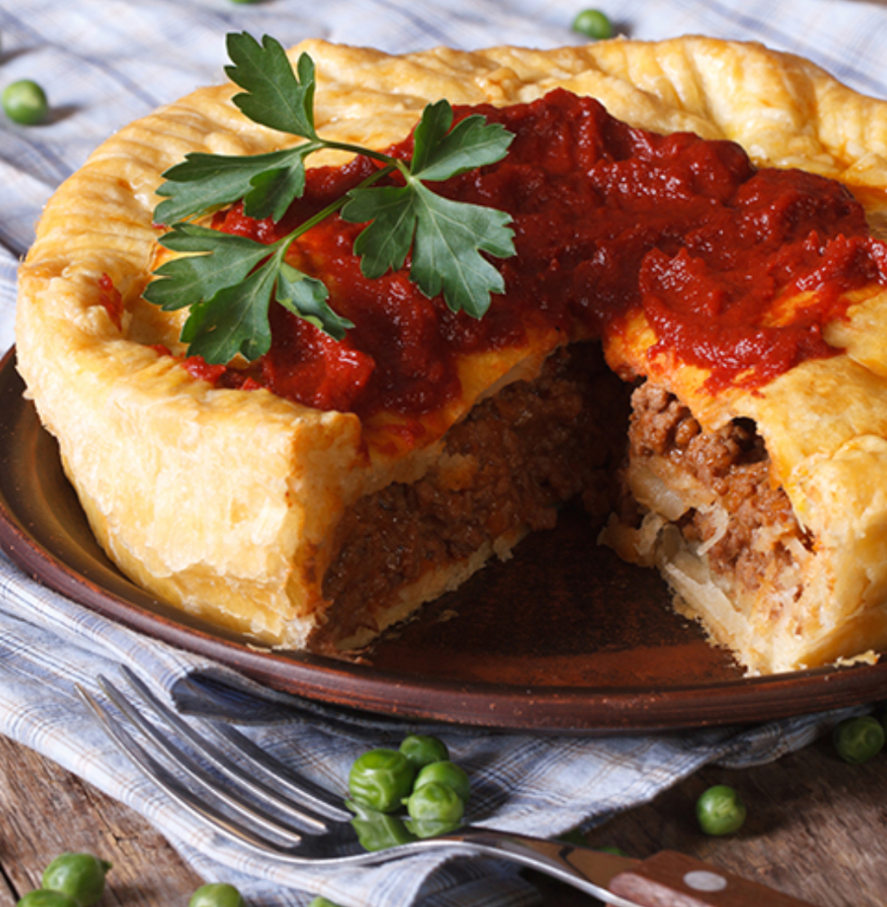

Австралия


Мясо и барбекю (BBQ): Австралийцы любят мясо, особенно стейки из говядины, баранину и сосиски, приготовленные на гриле (барбекю).
Веджимайт (Vegemite): Густая, соленая паста на основе дрожжевого экстракта, которую намазывают на тосты с маслом — классический завтрак.
Мясные пироги: Небольшие пироги с мясной начинкой и подливой — популярный перекус.
Морепродукты: Благодаря длинной береговой линии в рационе много рыбы (баррамунди), креветок, устриц.
Сэндвичи и тосты: Авокадо на тосте, сэндвичи с яйцом и салатом.
Свежие фрукты и овощи: Местные фрукты (манго, маракуйя) и овощи (свекла, картофель) широко используются.
Азиатская кухня: Популярны блюда с лапшой, карри, рисом и использование соевого соуса.